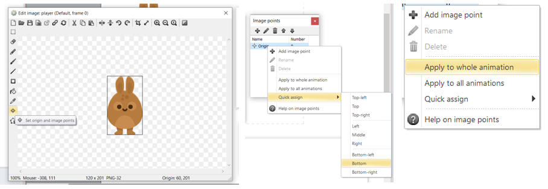

Chapter 2: Object
Object คือ สิ่งที่เป็นตัวแทนของสิ่งต่าง ๆ ที่เราสร้างขึ้นมา เช่น ตัวละคร, ช่องเก็บข้อมูล หรืออุปกรณ์สำหรับเล่นเกม (คีย์บอร์ด, จอย, เมาส์) ฯลฯ
Insert new object
การสร้าง Object ในโปรแกรม Construct2 นั้นจะเรียกว่า การ Insert โดยมีวิธีการดังนี้
1. คลิกขวาที่ workspace เลือก Insert new object หรือ คลิกขวาที่ ไอคอนไฟล์ในแถบ project bar

(รูป 021 Insert Object(1))
(รูป 022 Insert Object(2))
2. จะมีหน้าต่างใหม่ขึ้นมาสามรถเลือกประเภทที่เราอยากให้ Object เป็นได้โดยการเลื่อน แถบด้านขวา
(รูป 023 Insert Object(3))
3. คลิกซ้ายเพื่อเลือกประเภทที่เราอยากให้ Object เป็นอะไร
4. หลักจากนั้นตั้งชื่อให้ Object ในกรอบ สี่เหลี่ยมด้านล่าง และ กดปุ่ม Insert เพื่อสร้าง
คำเตือน : การตั้งชื่อ Object นั้นควรตั้งให้สอดคล้องกับการใช้งาน หรือ ว่าอธิบายว่าคืออะไร
Object ของ Construct 2
แยกออกเป็น 8 ประเภทดังนี้
1. Data & Storage คือ Object สำหรับเก็บข้อมูลในรูปแบบต่าง ๆ มีทั้งหมด 4 แบบ
1. Array เก็บข้อมูลในรูปแบบ แถว ได้ตั้งแต่แบบ 1 มิติ ถึง แบบ 3 มิติ ใช้สำหรับเก็บค่าตัวแปรต่าง ๆ
2. Dictionary เก็บข้อมูลในรูปแบบ ดิกชันนารี่
3. Local storage เก็บข้อมูลแล้วบันทึกข้อมูลลงในเครื่องของผู้ใช้ ใช้สำหรับเก็บข้อมูลที่ต้องการบันทึก เช่น เซฟเกม, ค่าคะแนนสูงสุด เป็นต้น
4. XML เป็นการใช้ข้อมูลจาก ไฟล์เอกสารรูปแบบไฟล์ XML ใช้สำหรับ ดึงข้อมูลไฟล์ XML มาใช้
2. Form controls คือ Object สำหรับให้ผู้เล่นควบคุมสิ่งต่าง ๆ ส่วนใหญ่ใช้ในการตั้งค่าในตัวเกม (ความ`ยาก, ความสวยงามในเกม) มีทั้งหมด 6 แบบ
1. Button เป็นปุ่มสำหรับกด หรือ เป็นช่องทำเครื่องหมาย
2. File chooser เป็นโปรแกรมเสริม ที่อนุญาติเลือกไฟล์ในเครื่องของผู้เล่นมาใส่ในเกมได้
3. List เป็นกล่องแบบ list แบบต่าง ๆ
4. Progress bar เป็น object บาร์แสดงผลการทำงานว่าดำเนินไปทำไรแล้ว
5. Slider bar เป็น object บาร์เลื่อนซ้ายขวา
6. Textbox เป็น object ที่สร้างช่องเปล่าให้ผู้เล่นได้กรอก
(รูปที่ 024 Object > Form controls)
3. General คือ Object หลักที่ใช้ในเกม มีทั้งหมด 9 แบบ
1. 9-patch เป็นเปลี่ยนขนาดรูปโดยหารตัดบริเวณขอบและมุม ใช้สำหรับ Object ที่เปลี่ยนตาม
2. Function เป็นการเรียกใช้ action เดิมแต่ต่าง event ใช้เพื่อการเขียน action ซ้ำ ในต่าง event
(รูปที่ 025 ก่อนและหลังการใช้ Function)
3. Shadow light สามารถทำให้ object นั้นสร้าง เงาแบบ real-time
4. Particles สำหรับสร้าง เอฟเฟค แบบฝุ่น หรือ ควัน
5. Sprite oject ที่จะปรากฏในเกม เช่น ตัวละคร, สิ่งของ เป็นต้น
(รูปที่ 026 Particles)
(รูปที่ 027 Sprite)
6. Sprite Font เป็น object รูปภาพที่แสดงออกเป็นตัวอักษร
7. Text เป็น object สำหรับแสดงตัวอักษรในเกม
8. Tiled Background เป็น object ที่แสดงออกเป็นรูปภาพ ซ้ำ ๆ เป็นรูปแบบ
9. Tilemap เป็นนำรูปที่เป็นแผ่นมาต่อกันจน เป็นแผนที่ในเกม
(รูปที่ 028 Tile background VS Sprite)
(รูปที่ 029 Tilemap)
4. Input คือ การทำให้เกมสามารถรับคำสั่งต่าง ๆ และ ตั้งค่าว่าปุ่มใดทำให้เกิดอะไร ได้ มีทั้งหมด 4 แบบ
1. Gamepad สามารถทำให้รับคำสั่ง จาก จอย
2. Keyboard สามารถทำให้รับคำสั่ง จาก คีย์บอร์ด
3. Mouse สามารถทำให้รับคำสั่ง จาก เมาส์
4. Touch สามารถทำให้รับคำสั่ง จากการ สัมผัส ใช้กับมือถือ
5 .Media คือ สื่อต่าง ๆ ที่ทำให้แสดง หรือ รับการทำงานได้ มีทั้งหมด 4 แบบ
1. Audio ใช้เพื่อให้สามารถใส่และใช้เสียงในเกม
2. Geolocation ใช้เพื่อประมาณการที่อยู่ของ ผู้เล่น
3. User Media อนุญาตให้ รับข้อมูลจาก กล้อง webcam หรือ microphone ของผู้เล่นในเกมได้
4. Video ทำให้แสดง Video ในเกมได้
6. Monetisation คือสร้างรายได้ผ่านทางวิธีต่าง ๆ มีทั้งหมด 3 แบบ
1. AdMob ads ทำให้เกม โชว์โฆษณา จาก AdMob
2. IAP หรือ In-App Purchases ทำให้เกมสามารถขายของในเกมแก่ผู้เล่น โดยซื้อภายในเกม
3. pubCenter ทำให้เกมโชว์โฆษณา จาก Windows Store
7. Platform specific คือการทำให้ ขาย, เล่น, ใช้งานหรือเก็บข้อมูลบน Platform ต่าง ๆ ได้ มีทั้งหมด 10 แบบ
1. Facebook 6. Scirra Arcade
2. Game Center บน IOS 7. Stride
3. Google Play 8. Twitter
4. Kongregate 9. Windows Store
5. NW.js 10. Xbox Live
8. Web คือการทำให้เกมติดต่อแบบ Web มีทั้งหมด 4 แบบ
1. AJAX ทำให้สามารถโชว์ระหว่างเกมได้
2. Browser สามารถใช้งานรูปแบบ web ในการรันเกม
3. Multiplayer สามารถทำ real-time online multiplayer ได้
4. WebSocket ใช้รูปแบบการส่งข้อมูล real-time แบบ WebSocket protocol
Sprite
Sprite คือ object ที่จะปรากฏและมีผลในเกม เช่น ตัวละคร, มอนสเตอร์, อาวุธเป็นต้น
การสร้าง Sprite
1. คลิกขวาในพื้นที่บริเวณตรงกลางหน้าจอ แล้วเลือก Insert new object
2. จะมีหน้าจอใหม่ขึ้นเลื่อนเมาส์ไปคลิกที่ Sprite หลังจากนั้นตั้งชื่อและ กดปุ่ม Insert เพื่อสร้าง / ใส่รูป
3. คลิกที่ workspace จะขึ้นหน้าต่างดังรูป (รูป 029) คลิกที่ไอคอนแฟ้ม และเลือกภาพให้ Sprite และกด enter
4. สามารถลาก Sprite จาก project bar มาเพิ่มใน workspace ได้ (รูป 030)
คำเตือน : การตั้งชื่อ Sprite นั้นควรตั้งให้สอดคล้องกับการใช้งาน หรือ ว่าอธิบายว่าคืออะไร
(รูปที่ 030 หน้าต่างวาด, ใส่รูปให้ Sprite)
(รูปที่ 031 การแสดง sprite ใน project bar)
การกำหนด Animation ของ sprite
1. ดับเบิ้ลคลิก หรือ คลิกขวาที่ sprite และเลือก edit animation (รูป 031) จะขึ้นหน้าต่างดังนี้ (รูป 032) โดยจะประกอบไปด้วย หน้าต่างตั้งค่ารูปภาพ (edit image) หน้าต่างอนิเมชัน(animation) และ หน้าต่าง อนิเมชันเฟรม (animation frames)
(รูปที่ 032 การเปิดหน้าต่าง การจัดการอนิเมชัน)
(รูปที่ 033 หน้าต่าง การจัดการอนิเมชัน)
2. คลิกขวาที่ หน้าต่าง animation frame > import frame > from file… > เลือกรูปภาพ > คลิก open (รูป 033) ผลลัพธ์ (รูป 034)
(รูปที่ 034 import frame: step)
(รูปที่ 035 import frame: result)
3. ตั้งค่าจุด origin ของ sprite ให้เท่ากัน ตามลำดับ
(รูปที่ 036 set up)
4. เมื่อคลิก อนิเมชัน ใน หน้าต่าง อนิเมชัน มีแถบ Animation properties ขึ้น (รูป 021)

(รูปที่ 037 Animation Properties)
1. Speed ความเร็วในการเล่นอนิเมชัน 1 รอบ
2. Loop(No / Yes) ให้อนิเมชันนั้นเล่นซ้ำ
3. Repeat count ตั้งค่าให้ อนิเมชัน วนซ้ำตามรอบที่กำหนด
4. Repeat to ตั้งค่าเฟรมเมื่อเล่นอนิเมชันจนจบ
5. Ping-pong เล่นอนิเมชัน ไปกลับ เช่น เฟรมที่ 1 2 3 2 1 เป็น
Sprite Properties
การกำหนดคุณสมบัติให้กับ Sprite
(รูปที่ 038 Sprite Properties bar)
Object type properties
1. Name ชื่อของ Sprite
2. Plugin บอกว่า Object เป็นประเภทอะไร แต่ในที่ คือ Sprite
3. UID ตัวเลขเฉพาะของ Object
4. Global ตั้งค่า Object ว่าจะถูกทำลายหลังออก Layout หรือไม่
Common
1. Layer บอกว่า Sprite อยู่ Layer ไหน
2. Angle บอก Sprite นั้นหมุนกี่องศา
3. Opacity บอกความทึบแสงของ Sprite
4. Position บอกว่า Sprite อยู่ตรงไหนตาม แกน x และ แกน y
5. Size บอกว่า Sprite นั้นขนาดเท่าไร มีหน่วยเป็น pixels
(รูปที่ 039 หน้าต่าง Instance variables)
Instance variables คือ ตัวแปรของ Object / Sprite
โดยมีอยู่ Instance variables อยู่ 3 ประเภทคือ
1. Number มีค่าเป็นตัวเลข
2. Boolean เป็นค่าระหว่าง False(เท็จ) กับ True(จริง)
3. Text มีค่าเป็นตัวหนังสือ
(รูปที่ 040 การสร้าง Instance variables)
โดยวิธีการสร้าง Instance variable ดั้งนี้
1. คลิกไปที่ Sprite ที่ต้องการคลิกไปที่ Instance variables ที่อยู่ทางด้านซ้ายของจอ
2. หลังจากนั้นจะมีหน้าจอใหม่ขึ้นมา ให้คลิกไปที่ สัญลักษณ์ + เพื่อเป็นการเพิ่ม Instance variables
3. หลังจากนั้นจะมีหน้าจอใหม่ขึ้นมา ให้เราตั้ง ชื่อ เลือกประเภท Instance
4. หลังจากกดปุ่ม OK ถือว่าเป็นอันเสร็จ
Text
Text คือ object สำหรับแสดงตัวอักษรในเกม
(รูปที่ 041 ตัวอย่าง Text)
(รูปที่ 042 ตัวอย่าง Text)
Text Properties
1. Text ตัวอักษรที่จะโชว์บนจอ
2. Initial visibility ตั้งค่าว่าให้มาเห็นในเกมหรือไม่
3. Font รูปแบบ Font ที่ใช้
4. Color สีของตัวอักษร
5. Horizontal alignment ตำแหน่งตัวอักษรในแนวนอน
6. Vertical alignment ตำแหน่งตัวอักษรในแนวตั้ง
7. Hotspot เลือกจุดหมุนให้ Objects
8. Wrapping ล้อมข้อความ ด้วยคำหรือ ตัวอักษร
9. Line height ค่าความห่างแต่ละบรรทัด
Tile background
Tile background คือ object ที่แสดงออกเป็นรูปภาพ ซ้ำ ๆ เป็นรูปแบบ Tile background
(รูปที่ 043 ตัวอย่าง Tile background)
Tile map
Tile map คือ เป็นนำรูปที่เป็นแผ่นมาต่อกันจน เป็นแผนที่ในเกม จะมีหน้าต่างใหม่ขึ้นมาหลังจากทำการ Insert tilemap เพื่อให้เราดึงภาพที่ต้องการมาเพื่อวาด tilemap
(รูปที่ 044 ตัวอย่าง Tilemap)
(รูปที่ 045 Tilemap Properties)
Tilemap Properties
1. Image รูปภาพสำหรับใช้ใน Tilemap
2. Initial visibility ตั้งค่าว่าให้มาเห็นในเกมหรือไม่
3. Tile width ความกว้างของ Tile
4. Tile height ความสูงของ Tile
5. Tile x offset รอยห่างแนวนอน ของ Tile
6. Tile y offset รอยห่างแนวตั้ง ของ Tile
7. Tile x spacing ระยะห่างแนวนอน ระหว่าง Tile
8. Tile y spacing ระยะห่างแนวตั้ง ระหว่าง Tile
9. Seamless mode ทำให้ภาพไรรอยต่อ
Input
(รูปที่ 046 input)
Input คือ การทำให้เกมสามารถรับคำสั่งผ่านตัวรับต่าง ๆ โดยจะมีให้เลือก 4 ชนิด
1. จอยคอนโทรลเลอร์ 3. เมาส์
2. คีย์บอร์ด 4. สัมผัส (มือถือ)
Audio
Insert เพื่อให้ โปรแกรมสามารถ อ่านไฟล์เสียงที่นำเข้ามาได้
Properties
1. Timescale audio เปลี่ยนเวลาในเล่น audio
2. Save/load เล่นย้อนหลังเมื่อมีการโหลด และ เซฟ
3. Play in background เล่นเพลงหลัง background
Positioned Audio
1. Panning model รูปแบบประมวลผลเสียง
2. Distance model รูปแบบเสียงที่ลดลงจากระยะห่าง
3. Listener Z height ระดับเสียงความดังตามลำดับ layout
4. Reference distance เสียงโดยวัดจากระยะเป็น pixels
5. Maximum distance ระยะเสียงที่จะไม่ลดลง
6. Roll-off factor เสียงที่ลดลงเร็วๆ แค่เมื่อห่างจากแหล่ง
(รูปที่ 047 audio properties)